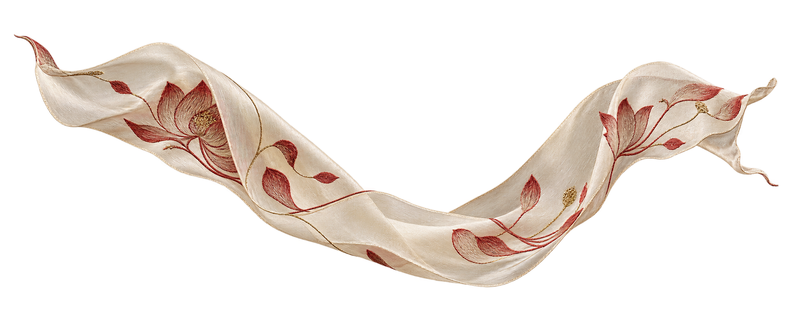

PORTFOLIO · SILK, SCIENCE & VIETNAMESE HERITAGE · 2026
Thái Hồng
Quỳnh Chi
Chemistry Major
Researcher
Embroidery Artist
Hanoi, Vietnam
I follow one thread across two worlds: the precision of chemistry and the patience of embroidery. Through silk, natural dyes and Vietnamese craft, I explore how science can preserve what hands and memory have made.
1600
SAT Score ↗
8.5
IELTS ↗
9.6
GPA / 10 ↗
5 / 5
AP Chemistry ↗
Class of '27
Thái Hồng Quỳnh Chi
Hanoi-Amsterdam High School for the Gifted
Major
Chemistry
Class Rank
Valedictorian
DOB
17 / 09 / 2009
Goal
Study Abroad '27
Email
quynhchicharlotte1709
@gmail.com
@gmail.com

Social Work &
Artistic Pursuits